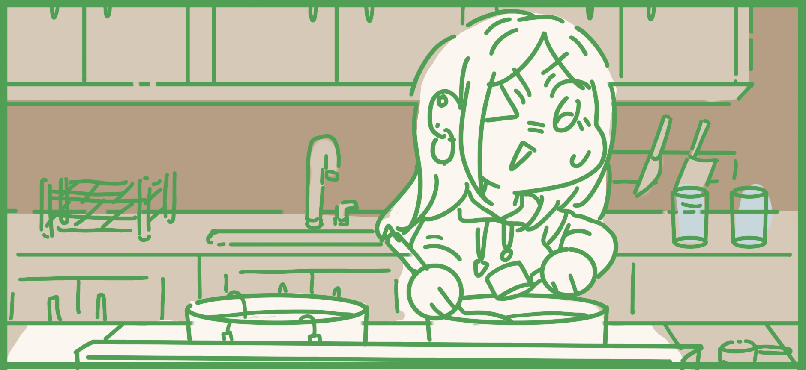

Brewing Hong Kong Lemon Tea
What is Hong Kong Lemon Tea?
The drink dates back to the 1950s, during Hong Kong's British colonial era. Lemon tea was already popular in Western countries, and local cafes and restaurants began serving it to cater to the tastes of British residents of Hong Kong. The drink became a staple in Hong Kong's food culture over time and can now be found in nearly every cha chaan teng in the city.
Ingredients:
Step 1: Preparing Syrup
Add ½ cup of water and ½ cup of sugar to a saucepan over medium-high heat.
Stir continuously until the sugar is dissolved. Pour into a small glass jar or storage container. Simple syrup can be stored in the refrigerator for up to one month.
Step 2: Brewing Tea
In a saucepan over medium-high heat, combine Ceylon tea leaves (or bags) and water. Bring to a simmer (about 180°F), then remove from the heat and allow the mixture to steep for 5 minutes. Ensure you don't over-steep; otherwise, the tea will be cloudy and bitter. Remove tea bags from the pot and allow the tea to cool to room temperature.
Step 3: Assemble
In a tall glass, add a handful of ice cubes, three lemon slices, 1 cup of tea, and 3 tablespoons of simple syrup. Stir to combine and repeat for the remaining glasses. Enjoy your drink!